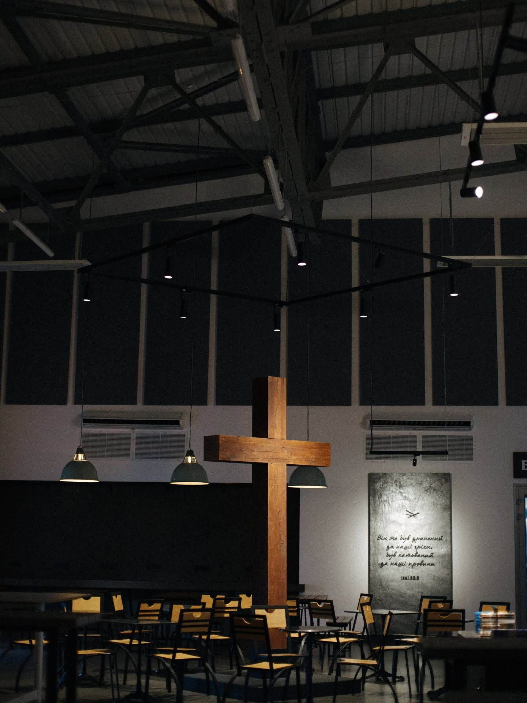

Не потрібно нічого знати заздалегідь. Не потрібно вірити «правильно». Просто прийди — і подивись.
Ми пам'ятаємо, яким незручним буває перший раз у незнайомому місці. Тому — ось чесна відповідь на питання «а що там взагалі?»
«Прийдіть до Мене всі втомлені й обтяжені, і Я вас заспокою.»Матвія 11:28

Великий зал, зручні місця, сучасне обладнання для звуку і відео. Паркінг поряд. Дітей — в недільну школу, решту — у зал.
Як дістатися →Дрес-коду немає. Джинси, вишиванка, спортивний костюм — все підходить. Ми зустрічаємо людей, а не одяг.
На вході — волонтери. Вони покажуть де що, нальють кави і відповідять на будь-яке питання. Або просто посміхнуться і відчепляться — якщо ти інтроверт.
Живе поклоніння (20–25 хв), молитва, проповідь на основі Біблії (40–45 хв). Ніхто не змушуватиме вставати, говорити, здавати гроші або підписуватись.
Найважливіше часом відбувається після. Хтось знайомиться, хтось продовжує розмову почату під час проповіді. Тебе не будуть переслідувати — але будуть раді.
Сподобалось — приходь знову. Не сподобалось — ніхто не образиться. Маєш питання — напиши нам. Ми не тиснемо і не бігаємо за людьми.
Ти не перший, хто запитує це. І, повір, ми чули найрізноманітніші питання — вони всі нормальні.
Донецьке шосе, 19 · Дніпро. Просто прийди — решта само складеться.